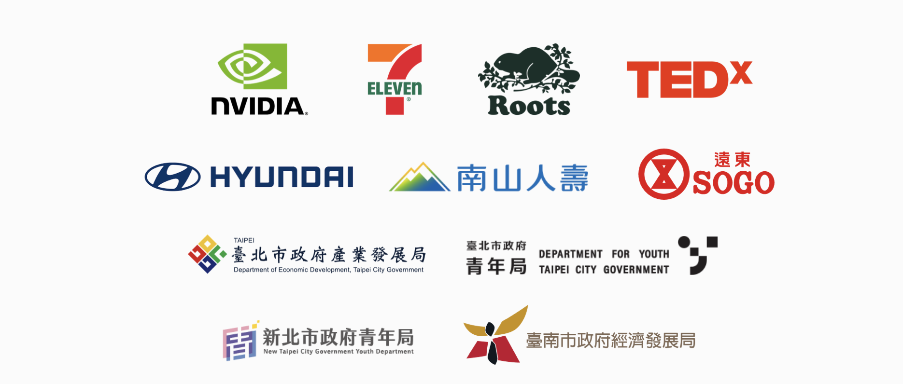

nuva Asian Tour｜講座
讓 AI，真的有用！
AI 發展飛快、工具眾多，從哪開始？
這場兩小時帶你系統性掌握學習脈絡。
看懂路徑、選對工具，真正幫到你的職場。
📅 2025/09/27（六）
🕑 14:00–16:00
📍 東京築地
🗣️ 繁體中文主講
倒數計時載入中…
合作夥伴

值得跑一趟東京築地的三大理由
💡 白話好懂
沒有 AI 背景也能聽懂，帶手機就能學！講師用生活化例子，避免高空抽象，幫你踏出第一步。
🌏 繁體中文｜今年唯一一場
在日本難得的中文學習資源，nuva 作為台灣指標性 AI 教學團隊，今年唯一一次東京分享。
📘 帶得走的講義
現場提供講義與 3 個實用模板，幫助你立即提升效率、節省時間。
兩大底層邏輯
① 跟 AI 溝通
像聊天一樣，清楚告訴 AI「角色、任務、輸出」，它就能更準確幫忙。
② 跟 AI 串接
把 AI 當小幫手，接上常用工具（文件、表格、信件），讓日常更有效率。
兩小時內容安排
14:00–14:30
如何讓你的 ChatGPT 變得比別人聰明？
- 學習 Markdown 語法，讓指令有條有序
- 設定 角色／目標／限制，輸出更精準
- 把模糊需求改寫成可執行任務的實戰演練
14:30–15:00
把 AI 接進工作流：文件、表格、信箱一鍵變助理
- 串接常用工具（Docs／Sheets／Gmail）做日常自動化
- 建立可重複的流程模板，節省 50% 重複工
- 資料安全與權限設定的必知原則
15:00–15:30
30 分鐘做出你的第一個 AI 小幫手
- 挑一個你的真實場景：簡報、客服回覆、會議摘要
- 用現場提供的 3 份模板快速完成原型
- 小組互評與教練指導，立即調整到能用
15:30–15:50
現場解題：你的情境我們一起拆
- 即時 Q&A，分析卡關原因與改寫方法
- 示範除錯：如何讓 AI 回答更準、更完整
- 延伸資源與最佳實務分享
15:50–16:00
不被淘汰的自學路線圖
- 一週練習計畫：15 分鐘就能開始
- 必追蹤的工具與社群清單
- 如何持續量化成效，向上溝通
活動資訊
講者
林上哲
活潑、好奇、帶點實驗精神——
證明「學 AI 可以像打電動一樣有趣」。
曾培訓 7-11、南山人壽、現代汽車，與 NVIDIA 聯名 AI 工作坊，
在台灣巡迴協助「零資訊背景」的人掌握生成式 AI 工具。
常見問題（FAQ）
我只會一點點 ChatGPT，可以跟得上嗎？
可以。整場設計給初學者；就算已常用 AI，也能建立更系統的學習脈絡。
會提供講義或重點整理嗎？
會。課程期間的講義與討論精華，將整理成一份重點檔案提供你帶回去。
需要會寫程式或自動化工具嗎？
不需要。本活動聚焦概念與底層邏輯，帶你看懂方向與關鍵觀念。
需要攜帶電腦嗎？
不用，手機即可參與課程。